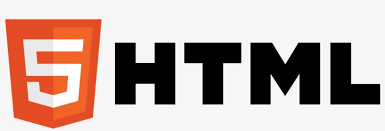
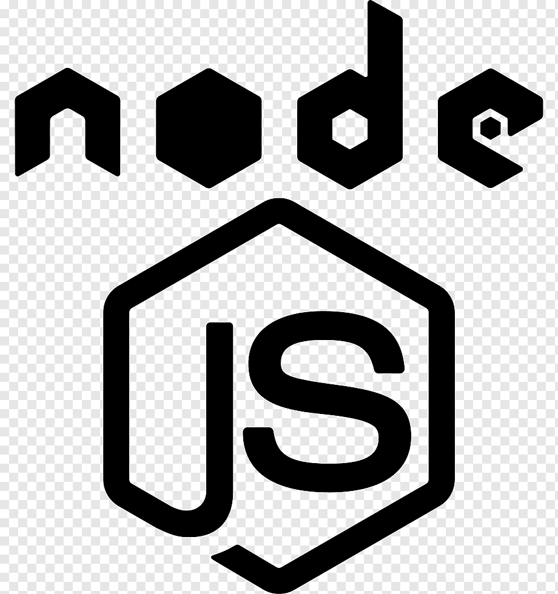

Hello, I am Ujjwal
and I am a beginner
webdeveloper

past Experience

HTML Developer (2020-2021)
As a HTML developer, we have In-depth knowledge of front-end coding languages including HTML,
CSS, JavaScript, and XML. Ability to troubleshoot coding and
application errors. Knowledge of web design and user application
requirements. Ability to meet strict publication deadlines.
JAVA Developer (2020-2021)
As a JAVA Developer , Responsible for developing applications and software using the
Java programming language, these specialized programmers
collaborate with fellow software engineers, web developers, and
others to use Java for developing business applications, websites
and more.

NODE.JS Developer (2020-2021)
As a Node. js developer, all you require to do is develop, deploy
and maintain network applications. For beginners to learn Node,
you must somehow be able to exchange data between servers and
users, and not just that it is also advisable to develop back-end
components and connect applications with other web services.
CSS Developer (2020-2021)
As a CSS developer, Being familiar with Sketch, Photoshop, InVision, or Figma, and
being able to “slice” the design, are must-have skills for CSS
developers. One should always keep in mind how to structure a
component to make it possible to apply the design at the same
time.
HTML Developer (2020-2021)
As a HTML developer, we have In-depth knowledge of front-end coding languages including HTML,
CSS, JavaScript, and XML. Ability to troubleshoot coding and
application errors. Knowledge of web design and user application
requirements. Ability to meet strict publication deadlines.
HTML Developer (2020-2021)
As a HTML developer, we have In-depth knowledge of front-end coding languages including HTML,
CSS, JavaScript, and XML. Ability to troubleshoot coding and
application errors. Knowledge of web design and user application
requirements. Ability to meet strict publication deadlines.